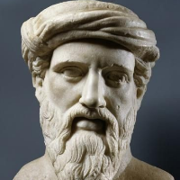

Daftar Isi
- Beranda
- Pythagoras
- Euclid
- Archimdes
- Leonardo Fibonacci
- Isaac Newton
- Leonhard Euler
- Carl Friedrich Gauss
- Georg Cantor
- Alan Turing
Hubungi Admin


JAM
lainnya
10 tokoh berpengaruh dalam matematika
Siapa itu Pythagoras?

Pythagoras (skt. 570 SM - skt. 495 SM) adalah seorang filsuf, matematikawan, dan pemimpin spiritual yang berasal dari pulau Samos di Yunani Kuno. Meskipun sedikit bukti tertulis yang ada tentang hidupnya, namun warisannya dalam bidang matematika, filsafat, dan musik sangat signifikan.
Sejarah Hidup:
Pythagoras adalah anggota dari suatu kelompok masyarakat yang dikenal sebagai Pythagorean, yang terkenal karena memiliki ajaran spiritual dan matematika yang kompleks. Ia pernah belajar di Mesir dan Babilonia, di mana ia mungkin memperoleh pengetahuan matematika dan filsafat yang menjadi dasar bagi pemikirannya.
Pemikiran:
Salah satu kontribusi paling terkenal dari Pythagoras adalah Teorema Pythagoras. Teorema ini menyatakan bahwa dalam segitiga siku-siku, kuadrat dari panjang sisi miring adalah sama dengan jumlah kuadrat dari panjang sisi pendeknya. Pernyataan ini dianggap sebagai salah satu dasar dari geometri dan memiliki aplikasi luas dalam berbagai bidang, dari konstruksi bangunan hingga teknologi modern.
Selain matematika, Pythagoras juga memiliki pandangan filosofis dan spiritual yang mendalam. Ia percaya dalam konsep bahwa segala sesuatu adalah angka dan bahwa angka memiliki makna dan kekuatan spiritual. Pythagoras juga mengajarkan tentang reinkarnasi dan hukum karma, serta mengembangkan ajaran etika dan kehidupan yang berlandaskan harmoni dan keseimbangan.
Karya:
Karya-karya Pythagoras sendiri tidak ada yang tersisa, tetapi pengaruhnya dapat ditemukan dalam tulisan-tulisan para pengikutnya. Beberapa karya yang memuat pemikiran Pythagoras adalah "Akousmata" dan "Golden Verses". Ajaran-ajaran Pythagoras dan pengikutnya tidak hanya berfokus pada matematika, tetapi juga melibatkan musik, astronomi, dan pembentukan karakter moral.
Pythagoras telah meninggalkan warisan penting dalam perkembangan matematika dan filsafat. Kontribusinya dalam menghubungkan aspek spiritual dengan konsep matematis telah membentuk pemahaman kita tentang hubungan antara dunia fisik dan abstrak.